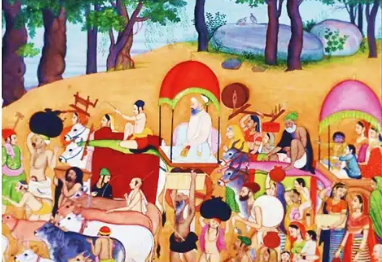

Krishna with Gopis
Details
SUBJECT MATTER :- THis is a horizontal painting. This painting is solely taken from a context from Bhagvat Puran. In this painting, Nanda, Yashoda, Krishna with kinsmen are shown in the middle of their journey to Vrindavan. They are migrating from Gokul to Vrindavan. This is beacause Nand, the chieftan of the village was advised to shift to Vrindavan close to the Govardhan mountain. The advise was necessary as Kans's court was near Gokul and his repeated attempts to kill Krishna did not go unseen. People who believed that Krishna was their future savior, so they wanted to save him. They also knew that he was no ordinary human.
DESCRIPTION:- In this painting a group of people are shown with their cattle and bellongings journying to Vrindavan. In this painting two bullock carts can be seen in which in the first one Nand is seated and on the one behind him, Krishna, Yashoda(step-mother) , Balram (step-brother)and Rohini (foster-mother). Men and women can be seen carrying their belongings in cloth bundle, baskets either on their shoulders or heads. Many women are also carrying their kitchen's jars and spinning wheel. The intricating details of leaves and trunks curved along the path with two rocks can be seen by the line of trees in the background. On top of rocks, birds are sitting. Each and every face in this painting is a careful study of portraiture. Almost all the faces are in Ek chasm (profile) and cows are drawn realistically with actual shades of cows and different sizes of horns. This painting consist of many anatomcal details.
COLOR SCHEME:- The lines drawn for every aspect are thin and delicate. The colors are neither too bright nor too dull. They have very subtle appeal due to its colors. The river behind the line of trees is in sky blue, most of the colors in these painting are in eathy colors.
HUMAN VALUES:
1.To be loyal and faithful to master.
2.To be a good member of team of common interest.
3.Stay united with your community at low and high time.